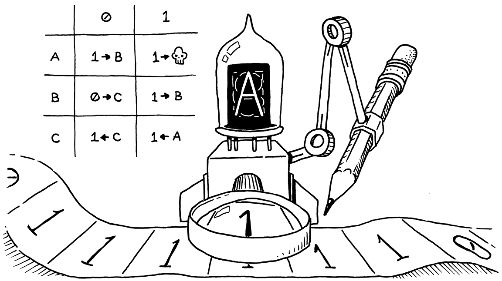
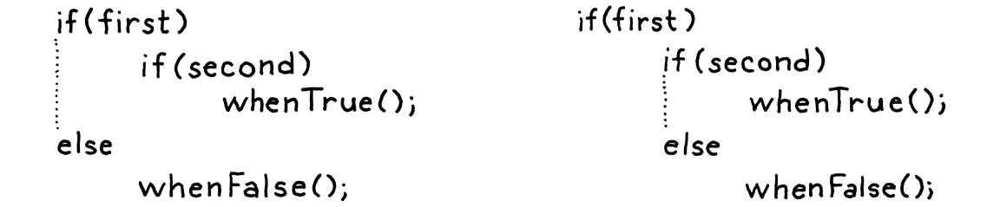

Control Flow
This book is a work in progress!
×If you see a mistake, find something unclear, or have a suggestion, please let me know. To learn when new chapters are up, join the mailing list:
(I post about once a month. Don’t worry, I won’t spam you.)
Logic, like whiskey, loses its beneficial effect when taken in too large quantities.
Edward John Moreton Drax Plunkett, Lord Dunsany
Compared to last chapter’s grueling marathon, today is a lighthearted frolic through a daisy meadow. But while the work is easy, the reward is surprisingly large.
Right now, our interpreter is little more than a calculator. A Lox program can only do a fixed amount of work before completing. To make it run twice as long you have to make the source code twice as lengthy. We’re about to fix that. In this chapter, our interpreter takes a big step toward the programming language major leagues: Turing-completeness.
9 . 1 Turing Machines (Briefly)
In the early part of last century, mathematicians stumbled into a series of confusing paradoxes that led them to doubt the stability of the foundation they built their work upon. To address that crisis, they went back to square one. Starting from a handful of axioms, logic, and set theory, they hoped to rebuild mathematics on top of an impenetrable foundation.
They wanted to rigorously answer questions like, “Can all true statements be proven?”, “Can we compute all functions that we can define?”, or even the more general question, “What do we mean when we claim a function is ‘computable’?”.
They hoped the answer to the first two questions would be “yes”. All that remained was to prove it. It turns out that the answer to both is “no” and, astonishingly, the two questions are deeply intertwined. This is a fascinating corner of mathematics that touches fundamental questions about what brains are able to do and how the universe works. I can’t do it justice here.
What I do want to note is that in the process of proving that those questions are false, Alan Turing and Alonzo Church devised a precise answer to the last question — a definition of what kinds of functions are computable. They each crafted a tiny system with a minimum set of machinery that is still powerful enough to compute any of a (very) large class of functions.
These are now considered the “computable functions”. Turing’s system is called a Turing machine. Church’s is the lambda calculus. Both are still widely used as the basis for models of computation and, in fact, many modern functional programming languages use the lambda calculus at their core.

Turing machines have better name recognition — there’s no Hollywood film about Alonzo Church yet — but the two formalisms are equivalent in power. In fact, any programming language with some minimal level of expressiveness is powerful enough to compute any computable function.
You can prove that by writing a simulator for a Turing machine in your language. Since Turing proved his machine can compute any computable function, by extension, that means your language can too. All you need to do is translate the function into a Turing machine, and then run that on your simulator.
If your language is expressive enough to do that, it’s considered Turing-complete. Turing machines are pretty dang simple, so it doesn’t take much power to do this. You basically need arithmetic, a little control flow, and the ability to allocate and use (theoretically) arbitrary amounts of memory. We’ve got the first. By the end of this chapter, we’ll have the second.
9 . 2 Conditional Execution
Enough history, let’s jazz up our language. We can divide control flow roughly into two kinds:
-
Conditional or branching control flow is used to not execute some piece of code. Imperatively, you can think of it as jumping ahead over a region of code.
-
Looping control flow executes a chunk of code more than once. It jumps back so that you can do something again. Since you don’t usually want infinite loops, it typically has some conditional logic to know when to stop looping as well.
Branching is simpler, so we’ll start there. C-derived languages have two main
conditional execution features, the if statement and the perspicaciously named
“conditional” operator (? :). An if statement lets
you conditionally execute statements and the conditional operator lets you
conditionally execute expressions.
For simplicity’s sake, Lox doesn’t have a conditional operator, so let’s get our if statement on. It gets a new production under the statement grammar rule:
statement → exprStmt | ifStmt | printStmt | block ; ifStmt → "if" "(" expression ")" statement ( "else" statement )? ;
An if statement has an expression for the condition then a statement to execute
if the condition is truthy. Optionally, it may also have an else keyword and a
statement to execute if the condition is falsey. The syntax tree node has fields
for each of those three pieces:
"Expression : Expr expression",
in main()
"If : Expr condition, Stmt thenBranch, Stmt elseBranch",
"Print : Expr expression",
Like other statements, the parser recognizes an if statement by the leading if
keyword:
private Stmt statement() {
in statement()
if (match(IF)) return ifStatement();
if (match(PRINT)) return printStatement();
When it finds one, it calls this to parse the rest:
add after statement()
private Stmt ifStatement() { consume(LEFT_PAREN, "Expect '(' after 'if'."); Expr condition = expression(); consume(RIGHT_PAREN, "Expect ')' after if condition."); Stmt thenBranch = statement(); Stmt elseBranch = null; if (match(ELSE)) { elseBranch = statement(); } return new Stmt.If(condition, thenBranch, elseBranch); }
As usual, the parsing code hews closely to the grammar. It detects an else
clause by looking for the preceding else keyword. If there isn’t one, the
elseBranch field in the syntax tree is null.
That seemingly innocuous optional else has in fact opened up an ambiguity in our grammar. Consider:
if (first) if (second) whenTrue(); else whenFalse();
Here’s the riddle: Which if statement does that else clause belong to? This isn’t just a theoretical question about how we notate our grammar. It actually affects how the code executes.
-
If we attach the else to the first if statement, then
whenFalse()is called iffirstis falsey, regardless of what valuesecondhas. -
If we attach it to the second if statement, then
whenFalse()is only called iffirstis truthy andsecondis falsey.
Since else clauses are optional, and there is no explicit delimiter marking the end of the if statement, the grammar is ambiguous when you nest ifs in this way. This classic pitfall of syntax is called the “dangling else” problem.

It is possible to define a context-free grammar that avoids the ambiguity directly, but it requires splitting most of the statement rules into pairs, one that allows an if with an else and one that doesn’t. It’s annoying.
Instead, most languages and parsers avoid the problem in an ad hoc way. No matter what hack they use to get themselves out of the trouble, they always choose the same interpretation — the else is bound to the nearest if that precedes it.
Our parser conveniently does that already. Since ifStatement() eagerly looks
for an else before returning, the innermost call to a nested series will claim
the else clause for itself before returning to the outer if statements.
Syntax in hand, we are ready to interpret:
add after visitExpressionStmt()
@Override public Void visitIfStmt(Stmt.If stmt) { if (isTruthy(evaluate(stmt.condition))) { execute(stmt.thenBranch); } else if (stmt.elseBranch != null) { execute(stmt.elseBranch); } return null; }
The implementation is merely a thin wrapper around the self-same Java code. It evaluates the condition. If it’s truthy, it executes the then branch. Otherwise, if there is an else branch, it executes that.
If you compare this code to how the interpreter handles other syntax we’ve implemented, the part that makes control flow special is that Java if statement. Most other syntax trees always evaluate their subtrees. Here, we may not evaluate the then or else statement. If either of those has a side effect, the choice not to evaluate it becomes user-visible.
9 . 3 Logical Operators
Since we don’t have the conditional operator, you might think we’re done with
branching, but no. Even without the ternary operator, there are two other
operators that are technically control flow constructs — the logical operators
and (&&) and or (||).
These aren’t like other binary operators because they short-circuit. If, after evaluating the left operand, we know what the result of the logical expression must be, we don’t evaluate the right operand. For example:
false && sideEffect();
For an and expression to evaluate to something truthy, both operands must be
truthy. We can see as soon as we evaluate the left false operand that that
isn’t going to be the case, so there’s no need to evaluate sideEffect() and so
it gets skipped.
This is why we didn’t implement the logical operators with the other binary
operators. Now we’re ready. The two new operators are low in the precedence
table. As in C, they each have their own precedence
with || lower than &&. We slot them right between assignment and
equality:
expression → assignment ; assignment → identifier "=" assignment | logic_or ; logic_or → logic_and ( "or" logic_and )* ; logic_and → equality ( "and" equality )* ;
Instead of falling back to equality, assignment now cascades to logic_or.
The two new rules, logic_or and logic_and, are similar to other binary operators. Then logic_and calls
out to equality for its operands, and we chain back to the rest of the
expression rules.
We could reuse the existing Expr.Binary class for these two new expressions
since they have the same fields. But then visitBinaryExpr() would have to
check to see if the operator is one of the logical operators and use a different
code path to handle the short circuiting. I think it’s cleaner to define a new
class for these operators so that they get their own visit method.
"Literal : Object value",
in main()
"Logical : Expr left, Token operator, Expr right",
"Unary : Token operator, Expr right",
To weave the new expressions into the parser, we first change the parsing code
for assignment to call or():
private Expr assignment() {
in assignment()
replace 1 line
Expr expr = or();
if (match(EQUAL)) {
The code to parse a series of or expressions mirrors other binary operators:
add after assignment()
private Expr or() { Expr expr = and(); while (match(OR)) { Token operator = previous(); Expr right = and(); expr = new Expr.Logical(expr, operator, right); } return expr; }
Its operands are the next higher level of precedence, the new and expression:
add after or()
private Expr and() { Expr expr = equality(); while (match(AND)) { Token operator = previous(); Expr right = equality(); expr = new Expr.Logical(expr, operator, right); } return expr; }
That calls equality() for its operands and now it’s all tied back together
again. We’re ready to interpret it:
add after visitLiteralExpr()
@Override public Object visitLogicalExpr(Expr.Logical expr) { Object left = evaluate(expr.left); if (expr.operator.type == TokenType.OR) { if (isTruthy(left)) return left; } else { if (!isTruthy(left)) return left; } return evaluate(expr.right); }
If you compare this to the earlier chapter’s visitBinaryExpr()
method, you can see the difference. Here, we evaluate the left operand first. We
look at its value to see if we can short circuit. If not, and only then, do we
evaluate the right operand.
The other interesting piece here is deciding what actual value to return. Since
Lox is dynamically typed, we allow operands of any type and use truthiness to
determine what each operand represents. We apply similar reasoning to the
result. Instead of promising to literally return true or false, a logic
operator merely guarantees it will return a value with appropriate truthiness.
Fortunately, we have values with proper truthiness right at hand — the results of the operands itself. So we use those. For example:
print "hi" or 2; // "hi". print nil or "yes"; // "yes".
On the first line, "hi" is truthy, so the or short-circuits and returns
that. On the second line, nil is falsey, so it evaluates and returns the
second operand, "yes".
That covers all of the branching primitives in Lox. We’re ready to jump ahead to loops. You see what I did there? Jump. Ahead. Get it? See, it’s like a reference to… oh, forget it.
9 . 4 While Loops
Lox features two looping control flow statements, while and for. While is the simpler one so we’ll start there. Its grammar is the same as in C:
statement → exprStmt | ifStmt | printStmt | whileStmt | block ; whileStmt → "while" "(" expression ")" statement ;
We add another clause to the statement rule that points to the new rule for
while. It takes a while keyword, followed by a parenthesized condition
expression, then a statement for the body.
The new grammar rule gets its own syntax tree node:
"Print : Expr expression",
in main()
replace 1 line
"Var : Token name, Expr initializer", "While : Expr condition, Stmt body"
));
It stores the condition and body. Here you can see why it’s nice to have separate base classes for expressions and statements. The field declarations make it clear that the condition is an expression and the body is a statement.
Over in the parser, we follow the same process we did for if. First, we add
another case in statement() to detect and match the leading keyword:
if (match(PRINT)) return printStatement();
in statement()
if (match(WHILE)) return whileStatement();
if (match(LEFT_BRACE)) return new Stmt.Block(block());
That delegates the real work to:
add after varDeclaration()
private Stmt whileStatement() { consume(LEFT_PAREN, "Expect '(' after 'while'."); Expr condition = expression(); consume(RIGHT_PAREN, "Expect ')' after condition."); Stmt body = statement(); return new Stmt.While(condition, body); }
The grammar is dead simple and this is a straight translation of it to Java. Speaking of translating straight to Java, here’s how we execute the new syntax:
add after visitVarStmt()
@Override public Void visitWhileStmt(Stmt.While stmt) { while (isTruthy(evaluate(stmt.condition))) { execute(stmt.body); } return null; }
Like the visit method for if, it uses the corresponding Java feature. The code isn’t complex, but it makes Lox much more powerful now. We can finally write a program whose running time isn’t strictly bound by the length of the source code.
9 . 5 For Loops
We’re down to the last flow control construct, Ye Olde C-style for loop. I probably don’t need to remind you, but it looks like this:
for (var i = 0; i < 10; i = i + 1) print i;
In grammarese, that’s:
statement → exprStmt | forStmt | ifStmt | printStmt | whileStmt | block ; forStmt → "for" "(" ( varDecl | exprStmt | ";" ) expression? ";" expression? ")" statement ;
Inside the parentheses, you have three clauses separated by semicolons:
-
The first clause is the initializer. It is executed exactly once, before anything else. It’s usually an expression, but for convenience, we also allow a variable declaration. In that case, the variable is scoped to the rest of the for loop — the other two clauses and the body.
-
Next is the condition. As in a while loop, this expression controls when to exit the loop. It’s evaluated once at the beginning of each iteration, including the first. If the result is truthy, it executes the loop body. Otherwise, it bails.
-
The last clause is the increment. It’s an arbitrary expression that does some work at the end of each loop iteration. The result of the expression is discarded, so it must have a side effect to be useful. In practice, it’s usually incrementing and assigning a variable.
Any of these clauses can be omitted. Following the clauses is a statement for the body.
9 . 5 . 1 Desugaring
That’s a lot of machinery, but note that none of it does anything you couldn’t do with the statements we already have. If for loops didn’t support initializer clauses, you could just put the initializer expression before the for statement. If it didn’t have an increment clause, you could simply put the increment expression at the end of the body yourself.
In other words, Lox doesn’t need for loops, they just make some common code patterns more pleasant to write. These kinds of features are called syntactic sugar. For example, the previous for loop could be rewritten to:
{ var i = 0; while (i < 10) { print i; i = i + 1; } }
That has the exact same semantics, though it’s certainly not as easy on the eyes. Reducing syntactic sugar to semantically equivalent but more verbose forms is called desugaring. We’ll use this technique inside our interpreter. Instead of directly interpreting for loops, the parser will consume the new syntax and translate it to more primitive forms that the interpreter already knows how to execute.
It’s not saving us a ton of work in this tiny interpreter, but desugaring is a powerful tool to have in your toolbox and this gives me an excuse to show it to you. In a sophisticated implementation, the backend does lots of work optimizing each supported chunk of semantics. The fewer of those there are, the more mileage it gets out of each optimization.
Meanwhile, a rich syntax makes the language more pleasant and productive to work in. Desugaring bridges that gap — it lets you take a robust expressive grammar and cook it down to a small number of primitives that the back end can do its magic on.
So, unlike the previous statements, we won’t add a new syntax tree node. Instead, we go straight to parsing. First, add an import we’ll need soon:
import java.util.ArrayList;
import java.util.Arrays;
import java.util.List;
Like every statement, we start parsing a for loop by matching its keyword:
private Stmt statement() {
in statement()
if (match(FOR)) return forStatement();
if (match(IF)) return ifStatement();
Here is where it gets interesting. The desugaring is going to happen here, so we’ll build this method a piece at a time, starting with the opening parenthesis before the clauses.
add after statement()
private Stmt forStatement() { consume(LEFT_PAREN, "Expect '(' after 'for'."); // More here... }
The first clause following that is the initializer:
consume(LEFT_PAREN, "Expect '(' after 'for'.");
in forStatement()
replace 1 line
Stmt initializer; if (match(SEMICOLON)) { initializer = null; } else if (match(VAR)) { initializer = varDeclaration(); } else { initializer = expressionStatement(); }
}
If the token following the ( is a semicolon then the initializer has been
omitted. Otherwise, we check for a var keyword to see if it’s a variable declaration. If neither of those matched, it
must be an expression. We parse that and wrap it in an expression statement so
that the initializer is always of type Stmt.
Next up is the condition:
initializer = expressionStatement(); }
in forStatement()
Expr condition = null; if (!check(SEMICOLON)) { condition = expression(); } consume(SEMICOLON, "Expect ';' after loop condition.");
}
Again, we look for a semicolon to see if the clause has been omitted. The last clause is the increment:
consume(SEMICOLON, "Expect ';' after loop condition.");
in forStatement()
Expr increment = null; if (!check(RIGHT_PAREN)) { increment = expression(); } consume(RIGHT_PAREN, "Expect ')' after for clauses.");
}
It’s similar to the condition clause except this one is terminated by the closing parenthesis. All that remains is the body:
consume(RIGHT_PAREN, "Expect ')' after for clauses.");
in forStatement()
Stmt body = statement(); return body;
}
Something is clearly missing. What about all of the clauses we parsed? This is where the desugaring comes in. We’ll take those and use them to synthesize syntax tree nodes that express the semantics of the for loop, like the hand-desugared example I showed you earlier.
The code is a little simpler if we work backwards, so we start with the increment clause:
Stmt body = statement();
in forStatement()
if (increment != null) { body = new Stmt.Block(Arrays.asList( body, new Stmt.Expression(increment))); }
return body;
The increment, if there is one, executes after the body in each iteration of the loop. We do that by replacing the body with a little block that contains the original body followed by an expression statement that evaluates the increment.
}
in forStatement()
if (condition == null) condition = new Expr.Literal(true); body = new Stmt.While(condition, body);
return body;
Next, we take the condition and the body and build the loop using a primitive
while loop. If the condition is omitted, we jam in true to make an infinite
loop.
body = new Stmt.While(condition, body);
in forStatement()
if (initializer != null) { body = new Stmt.Block(Arrays.asList(initializer, body)); }
return body;
Finally, if there is an initializer, it runs once before the entire loop. We do that by, again, replacing the whole statement with a block that runs the initializer and then executes the loop.
That’s it. Our interpreter now supports C-style for loops and we didn’t have to touch the Interpreter class at all. Since we desugared to nodes it already knows how to visit, there is no more work to do.
Finally, Lox is powerful enough to entertain us, at least for a few minutes. Here’s a tiny program to print the first 21 elements in the Fibonacci sequence:
var a = 0; var b = 1; while (a < 10000) { print a; var temp = a; a = b; b = temp + b; }
Challenges
-
A few chapters from now, when Lox supports first-class functions and dynamic dispatch, then we technically won’t need branching statements built into the language. Show how conditional execution can be implemented in terms of those. Name a language that uses this technique for its control flow.
-
Likewise, looping can be implemented using those same tools, provided our interpreter supports an important optimization. What is it, and why is it necessary? Name a language that uses this technique for iteration.
-
Unlike Lox, most other C-style languages also support break and continue statements inside loops. Add support for break statements.
The syntax is a
breakkeyword followed by a semicolon. It should be a syntax error to have a break statement appear outside of any enclosing loop. At runtime, a break statement causes execution to jump to the end of the nearest enclosing loop and proceeds from there. Note that the break may be nested inside other blocks and if statements that also need to be exited.
Design Note: Spoonfuls of Syntactic Sugar
When you design your own language, you choose how much syntactic sugar to pour into the grammar. Do you make an unsweetened health food where each semantic operation maps to a single syntactic unit, or some decadent dessert where every bit of behavior can be expressed ten different ways? Successful languages inhabit all points along this continuum.
On the extreme acrid end are those with ruthlessly minimal syntax like Lisp, Forth, and Smalltalk. Lispers famously claim their language “has no syntax”, while Smalltalkers proudly show that you can fit the entire grammar on an index card. This tribe has the philosophy that the language doesn’t need syntactic sugar. Instead, the minimal syntax and semantics it provides are powerful enough to let library code be as expressive as if it were part of the language itself.
Near these are languages like C, Lua, and Go. They aim for simplicity and clarity over minimalism. Some, like Go, deliberately eschew both syntactic sugar and the kind of syntactic extensibility of the previous category. They want the syntax to get out of the way of the semantics, so they focus on keeping both the grammar and libraries simple. Code should be obvious more than beautiful.
Somewhere in the middle you have languages like Java, C# and Python. Eventually you reach Ruby, C++, Perl, and D, languages who have stuffed so much syntax into their grammar, they are running out of punctuation characters on the keyboard.
To some degree, location on the spectrum correlates with age. It’s relatively easy to add bits of syntactic sugar in later releases. New syntax is a crowd pleaser, and it’s less likely to break existing programs than mucking with the semantics. Once added, you can never take it away, so languages tend to sweeten with time. One of the main benefits of creating a new language from scratch is it gives you an opportunity to scrape off those accumulated layers of frosting and start over.
Syntactic sugar has a bad rap among the PL intelligentsia. There’s a real fetish for minimalism in that crowd. There is some justification for that. Poorly designed, unneeded syntax raises the cognitive load without adding enough expressiveness to carry its weight. Since there is always pressure to cram new features into the language, it takes discipline and a focus on simplicity to avoid bloat. Once you add some syntax, you’re stuck with it, so it’s smart to be parsimonious.
At the same time, most successful languages do have fairly complex grammars, at least by the time they are widely used. Programmers spend a ton of time in their language of choice, and a few niceties here and there really can improve the comfort and efficiency of their work.
Striking the right balance — choosing the right level of sweetness for your language — relies on your own sense of taste.